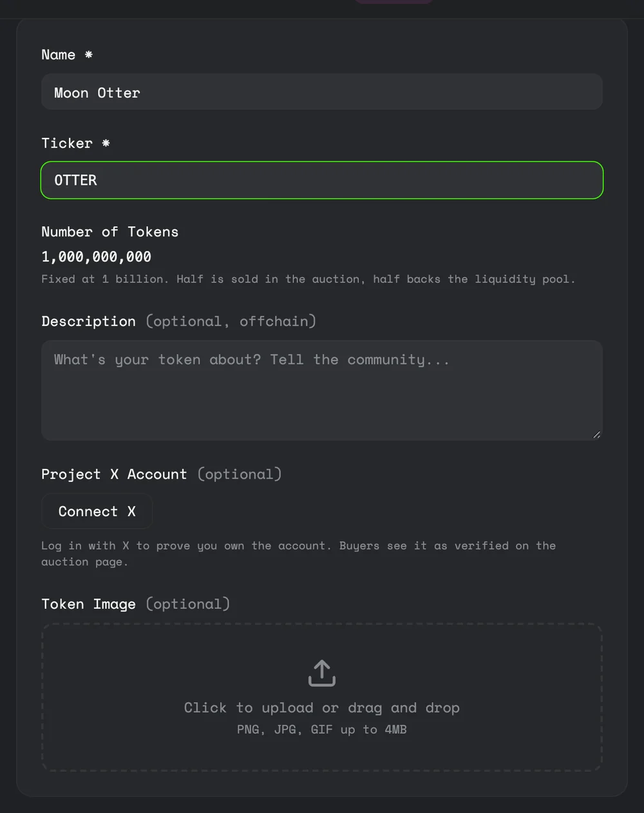
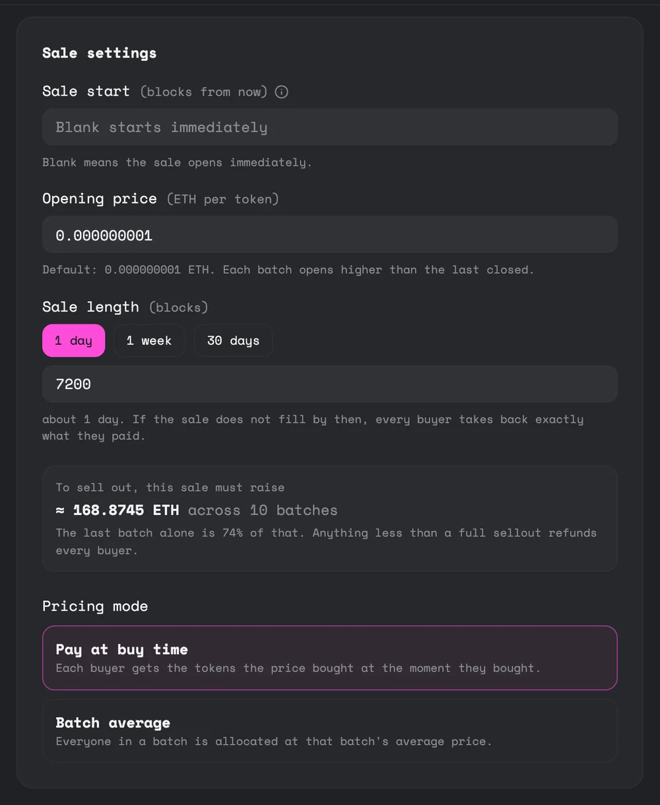
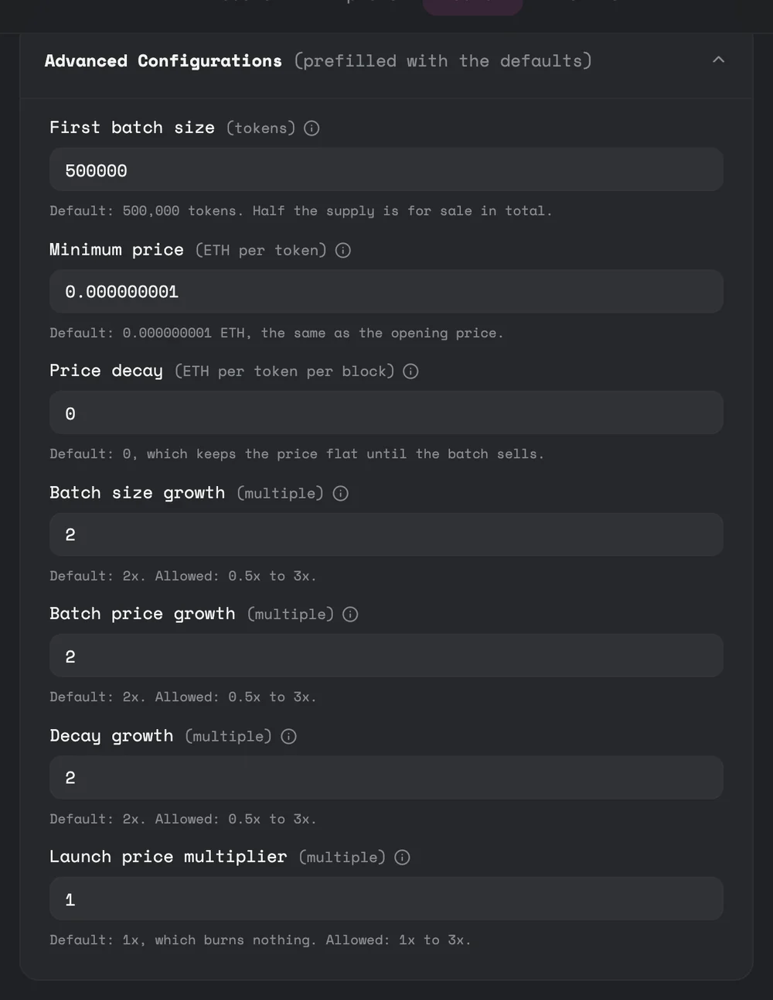
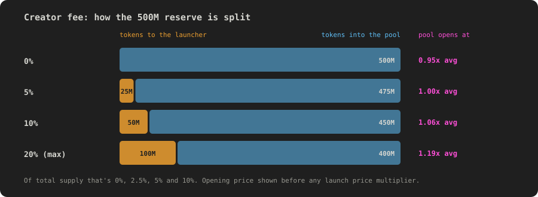
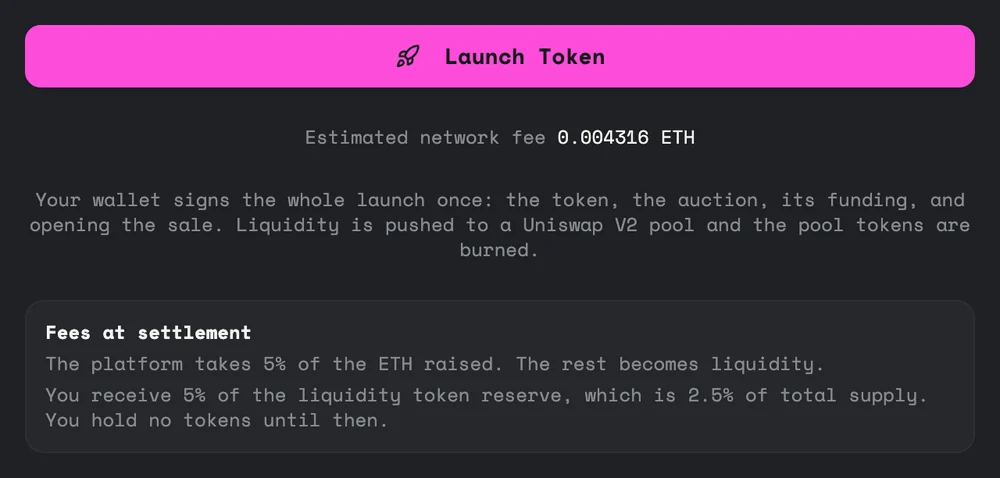

Launch a token
This is the full walkthrough for launching, from filling in the form to the market going live. Most of it happens automatically.
Before you start
You need a wallet with a little ETH for gas. That's it. The launch form makes the token for you. If there's a fee for creating a token it's shown at the top of the form before you sign. On the alpha, launching is free apart from gas.
Step 1: Your token

| Field | What it's for |
|---|---|
| Name and ticker | Required. How your token shows up everywhere. |
| Number of tokens | Fixed at 1 billion. Half is sold in the auction and half backs the pool. |
| Description | Optional. Stored off-chain and shown on your sale page. |
| Project X account | Optional. Log in with X to prove you own the account, and buyers see it marked as verified on the sale page. |
| Token image | Optional. PNG, JPG or GIF up to 4MB. |
Step 2: Sale settings

| Setting | What it controls |
|---|---|
| Sale start | How many blocks from now buying opens. Leave it blank to open as soon as the launch lands. A delay lets you announce the sale in advance. |
| Opening price | The price per token at the start of the first batch, in ETH. |
| Sale length | Between 1 and 30 days, set in blocks. There are buttons for 1 day, 1 week and 30 days. If the sale hasn't sold out by then, every buyer is refunded. |
The form shows how much ETH the sale must raise to sell out, and how much of that is the last batch. At the default settings that's about 169 ETH across 10 batches, with 74% in the last one. Anything less than a full sellout refunds every buyer, so set a target your community can actually reach.
Step 3: Advanced settings
These are filled in with the defaults. You only need to open them if you want a different shape of sale.

| Setting | What it controls | Default |
|---|---|---|
| First batch size | How many tokens are in the first batch. | 500,000 |
| Minimum price | The floor. Decay can never take the price below this, and it can't be above your opening price. | Same as the opening price |
| Price decay | How much the price drops each block inside a batch while nobody buys. Zero keeps it flat. | 0 |
| Batch size growth | How many times bigger each batch is than the last. 0.5x to 3x. | 2x |
| Batch price growth | Each batch's opening price as a multiple of the average price paid in the batch before. Never below the minimum price. 0.5x to 3x. | 2x |
| Decay growth | How the decay rate changes from batch to batch. Only matters if decay is above zero. 0.5x to 3x. | 2x |
| Creator fee | Your share of the liquidity reserve, paid in tokens at sellout. 0% to 20% of the reserve, which is 0% to 10% of supply. See Fees and who gets what. | Set by you |
| Launch price multiplier | Opens the trading pool above the average sale price by putting fewer tokens in and burning the rest. 1x to 3x. See The pool at sellout. | 1x, burns nothing |
Choosing your creator fee
Your creator fee comes out of the pool's half of the supply. Taking more gives you more tokens and also lifts the price trading opens at, but leaves fewer tokens in the pool.

The platform fee, the 50/50 split, the 1 billion supply and where the liquidity goes are all fixed by the protocol. That's deliberate: buyers can rely on those being the same for every launch.
Step 4: Launch

Press Launch Token. If your wallet can batch transactions, you sign once and that one signature creates your token, creates the sale, funds it with the full supply and opens it.
If your wallet can't batch, the launch takes four confirmations instead. If one gets interrupted, come back to the form and you can pick up where you left off. Until you finish, the sale shows as NOT FUNDED and nobody can buy.
If you set a start in the future, the sale shows as SOON until buying opens.
While the sale runs
There's nothing for you to do. Buyers commit, batches roll over, and the price follows the rules you set. You can watch progress on your sale page. You hold no tokens while the sale runs, and if you buy in your own sale you pay the same price as everyone else.
How it ends
If the sale sells out, the pool is created in the same transaction as the final buy and buyers can claim. You receive your creator fee in tokens at that point. You don't receive any ETH from the sale: it all goes into the pool apart from the platform's 5%. See Fees and who gets what.
If the sale doesn't sell out by its deadline, buying stops and everyone is refunded in full. No pool is created and no fees are taken.
A launch needs demand. punk.fun gives you fair mechanics and an automatic market, but it can't find buyers for you. A sale that doesn't sell out refunds everyone and leaves you where you started, minus gas. Line up your community before you launch.